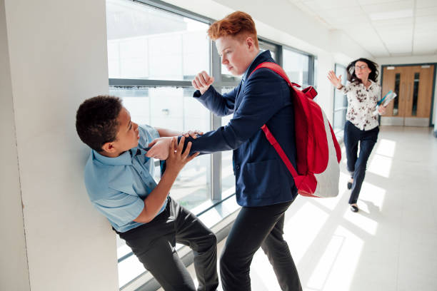
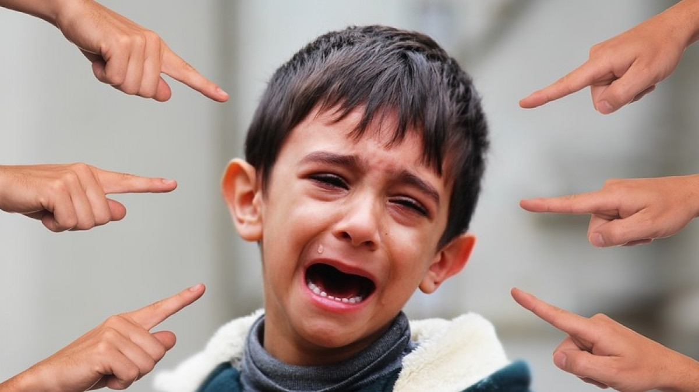
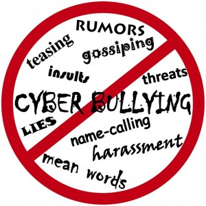
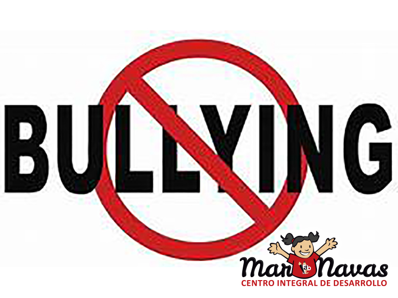

BULLYING
El bullying es una conducta repetitiva que afecta el normal comportamiento de l@s escolares que son víctimas de
ella. En este apartado encontrarás material que aborda las características y tipos de bullying.
También
identificarás algunos factores de riesgo, efectos del bullying y signos para identificar si un niñ@ está
siendo víctima de bullying. A su vez, compartimos algunas recomendaciones sobre cómo ayudar a quien está
siendo acosado.
QUE ES EL BULLYING
El bullying, también llamado intimidación o acoso, es una conducta escolar repetitiva que afecta el normal
comportamiento
de la víctima y/o de la clase, tanto fuera como dentro de un centro educativo. Las conductas
que causan sufrimiento a las
personas son variadas e incluyen: insultos, apodos, emboscadas, ignorar,
excluir, dañar las pertenencias, amenazar,
empujar, pegar, entre otras. Incluye conductas de maltrato
verbal, físico y/o psicológico.
CARACTERISTICAS DEL BULLYING
El bullying tiene tres características que siempre están presentes: comportamientos agresivos, diferencia de
poder y repetición.
Respecto a la diferencia de poder, refiere a que la víctima es o se percibe más débil y
los acosadores pueden intentar usar la
fuerza física, información vergonzosa o la popularidad para dañar.
Por otro lado, la característica “repetición” alude a que dicha
conducta ocurre más de una vez o
probablemente volverá a suceder.
LAS 6 FORMAS DE BULLYING
Por su parte, podemos identificar 4 formas de bullying: acoso físico, acoso verbal, intimidación
social/relacional y ciberacoso.
- BULLYING FISICO
Este es el tipo de acoso más común, especialmente entre niños. Incluye golpes, empujones e incluso palizas
por parte de uno
o varios agresores contra una sola víctima. A veces, también incluye el robo o daño
intencional de las pertenencias de la víctima.

- BULLYING PSICOLOGICO
En este caso, existe una persecución, intimidación, tiranía, chantaje, manipulación y amenazas contra la otra
persona. Estas
acciones dañan la autoestima de la víctima y fomentan su sensación de miedo, y son las
más difíciles de detectar por parte
de profesores o padres porque son formas de acoso o exclusión que se
llevan a cabo en secreto. Con frecuencia, los agresores
utilizan este tipo de acoso para subrayar,
reforzar o resaltar acciones previas, manteniendo así la amenaza latente. Esto aumenta
la fuerza del
maltrato, ya que el acosador muestra un mayor poder al amenazar incluso cuando hay una figura de autoridad
presente. En la víctima, aumenta el sentimiento de indefensión y vulnerabilidad, ya que percibe esta
audacia como una amenaza
que eventualmente se materializará de manera más contundente. Puede consistir,
por ejemplo, en una mirada, una señal obscena,
una cara desagradable o un gesto.

- BULLYING VERBAL
Son acciones verbales con la finalidad de discriminar, difundir chismes o rumores, realizar acciones de
exclusión o bromas insultantes
y repetidas como poner apodos, insultar, amenazar, burlarse, reírse de
otros, generar rumores de carácter racista o sexual, etc. Es más
común entre algunas niñas durante la
adolescencia.

- BULLYING SEXUAL
Se presenta un acoso, inducción o abuso sexual o referencias malintencionadas a partes íntimas del cuerpo de
la víctima. Incluye el bullying
homófobo, que es cuando el maltrato hace referencia a la orientación
sexual de la víctima debido a una homosexualidad real o imaginaria.
- BULLYING SOCIAL
Este tipo de bullying busca aislar a un niño o joven del grupo, ignorándolo, excluyéndolo y marginándolo.
Puede ser directo: excluir a la víctima
de actividades, sacarlo del grupo, o indirecto: ignorarlo,
tratarlo como un objeto o hacer que parezca que no existe.
- CIBER-BULLYING O ACOSO CIBERNETICO
Con el aumento de las tecnologías, este tipo de bullying se está volviendo más frecuente. Es un tipo de acoso
muy serio y preocupante debido
a la gran visibilidad y alcance que pueden tener los actos de humillación
contra la víctima, así como el anonimato en el que pueden permanecer
los acosadores. Los canales son muy
variados: mensajes de texto en móviles, tabletas y computadoras, páginas web y blogs, juegos en línea,
correos electrónicos, chats, encuestas en línea de mal gusto, redes sociales, suplantación de identidad para
publicar mensajes, etc. El contenido del
acoso puede incluir insultos, montajes fotográficos o de video
de mal gusto, imágenes inadecuadas de la víctima tomadas sin su permiso, críticas
respecto a su origen,
religión, nivel socioeconómico o de sus familiares y amigos, etc. Todo con el objetivo de humillarla.
Independientemente del
tipo de bullying, el perfil del acosador suele ser de una persona físicamente
fuerte, impulsiva, dominante, con conductas antisociales y sin empatía
hacia sus víctimas.

Lamentablemente, algunos niños, niñas y adolescentes presentan algunos factores que los vuelven sujetos de mayor
riesgo para sufrir bullying.
Factores de riesgo
Algunos de estos factores de riesgo son:
- Presentar alguna enfermedad mental como depresión, ansiedad o baja autoestima.
- Tener alguna discapacidad intelectual o del desarrollo.
- Ser percibido como “débil”.
- Ser percibido como “diferente” por sus compañeros. Por ejemplo, porque tienen sobrepeso o bajo peso, se
visten de manera diferente o son
de una raza distinta a la mayoritaria en un contexto.
- Aquellos niñ@s y adolescentes (NNA) que no tienen muchos amigos o no socializan bien con los demás.
Asimismo, también existen algunos factores de riesgos de ser acosador(a) tales como: ser agresivo o frustrarse
fácilmente; tener problemas en el
hogar, como sufrir violencia o acoso o tener padres no involucrados con
sus
hijos; tener problemas para seguir las reglas; ver la violencia en
forma positiva; y tener amigos que
intimidan
a otros.
También pueden existir dos tipos de NNA que ejercen acoso. Por un lado pueden ser NNA que tienen poder social y
les gusta estar al mando de otros.
Y por otro lado, pueden ser NNA que están más aislados de sus compañeros,
pueden estar deprimidos o ansiosos, tienen baja autoestima, son fácilmente
presionados por sus compañeros y
tienen problemas para entender los sentimientos de otras personas.
Aún así, es importante destacar que sean cuales sean tus características ¡Ningún persona debería ser víctima de
bullying! El bullying es un problema
grave que causa daño. No sólo lastima a la persona que está siendo
intimidada, también puede ser perjudicial para los acosadores y para los testigos
de la intimidación. Los
niñ@s
que son acosados pueden desarrollar depresión, ansiedad y baja autoestima; problemas que en ocasiones se
extienden
a lo largo de toda su vida. A su vez, pueden padecer problemas de salud, tales como dolores de
cabeza
y de estómago. Sufrir bullying también puede
gatillar un deterioro en el rendimiento académico y aumentar el
ausentismo y deserción escolar.
Por otro lado, los niños que intimidan a otros tienen un mayor riesgo de consumo de sustancias, problemas en la
escuela y violencia en el futuro.
Es por todo esto que se vuelve esencial la detección temprana e intervención del bullying. Sin embargo, es
frecuente que los niños que están siendo
intimidados no lo denuncien, por vergüenza o temor a una reacción
violenta del acosador o pensar que a nadie le importa. Aún así, existen ciertos
signos que podrían dar
cuenta de
un problema de acoso escolar.
Signos para estar alertas
Algunos de estos son:
- Baja autoestima.
- Dolores de cabeza, dolores de estómago o malos hábitos alimenticios.
- No querer ir a la escuela o baja en el rendimiento escolar.
- Comportamientos autodestructivos, como huir de casa, hacerse daño o hablar de suicidio.
- Lesiones inexplicables.
- Perder o destruir ropa, libros, artículos electrónicos u otros.
- Problemas para dormir o pesadillas frecuentes.
- Pérdida repentina de amigos o evitación de situaciones sociales.
Una vez que se detecta alguna situación de acoso, existen diversas formas de contener y ayudar. Por un lado, te
recomendamos escuchar y enfocarte
en el/la NNA que está siento acosado. Ello permite enterarse de qué está
pasando y demostrar que se quiere ayudar. Luego, te invitamos a asegurar
al NNA que lo que sucede no es su
culpa. Una vez que se está consciente de las dificultades que el NNA acosado puede estar pasando, es posible que
este pueda hablar sobre esto. Para ello te sugerimos referirl@ a un consejero escolar, psicólog@ u otro servicio
de salud mental. También, en dicho
espacio se pueden entregar sugerencias sobre qué hacer. Por ejemplo,
hacer
juego de intercambiar roles y pensar cómo reaccionará el niñ@ si el acoso
ocurre nuevamente.
Sin embargo, no basta con involucrar al NNA que ha sido acosado. Para resolver la situación y proteger es
importante trabajar en conjunto con los
apoderados y la escuela. El bullying no suele terminar de la noche a
la
mañana. El compromiso para detenerlo debe mantenerse y asegurarse de que
el agresor sepa que su
comportamiento
es incorrecto y que perjudica a otros. Asimismo, se debe concientizar a todos los estudiantes que el acoso
escolar es un tema serio que no será tolerado.
Prevención
La prevención del harassment o acoso escolar es fundamental para minimizar y reducir sus efectos cuanto antes.
Dado que las causas que motivan
el bullying son muy diferentes hay que buscar soluciones al problema
mediante
una propuesta amplia y abierta, contando con el diálogo como la
principal herramienta para atajarlo.
Las estrategias tienen que ir enfocadas a:
Reducir la incidencia
Los profesores y los padres o tutores de los adolescentes tienen que llevar a cabo medidas que impidan la
aparición de nuevos casos de bullying.
Para conseguirlo deben identificar los factores de riesgo que los
generan
y actuar sobre ellos. Pueden realizar acciones como campañas de
sensibilización sobre el maltrato infantil,
talleres formativos para explicar a los padres los modelos educativos adecuados, etc.
Reducir los casos
Llevar a cabo actuaciones que dificulten que el maltrato se siga produciendo y que el adolescente tenga mayores
problemas. En este sentido, es
necesario que exista una relación de comunicación fluida entre las familias y
el
profesorado del centro.
Además, los profesores deben aumentar la vigilancia a la entrada y a la salida del colegio, así como en los
lugares donde es frecuente que se produzca
el acoso.
Por otro lado, la compañía constante de dos o tres personas de la confianza del acosado hasta que desaparezca el
sufrimiento puede ser muy beneficiosa
para el alumno.
